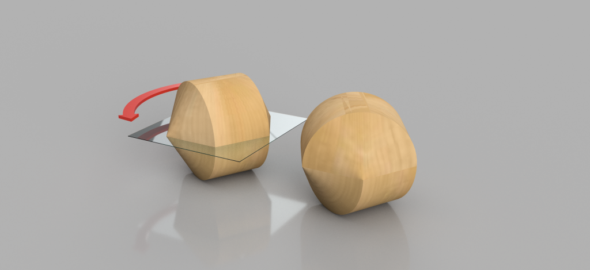

Mitmachen!
Studierende
Als Studierende/r können Sie an verschiedenen Angeboten des Labs teilnehmen:- Melden Sie sich für ein Projekt an! Wir haben interessante Forschungsprojekte, die von Forscherinnen und Forschern betreut werden. Ein Projekt ist eine Gelegenheit für Sie, interessante Mathematik, eine oder mehrere Programmiersprachen und hochaktuelle Technologie kennenzulernen. Ihr Projekt kann (muss aber nicht) Teil Ihrer Bachelor- oder Masterarbeit sein.
Zum Abschluss Ihres Projekts haben Sie die Gelegenheit, das Gelernte weiterzugeben, indem Sie zum Beispiel einen Votrag im HEGL-Seminar halten oder einen Blogeintrag für diese Webseite schreiben.
Die Liste der offenen Projekte finden Sie HIER. Wir freuen uns aber auch sehr, wenn Sie eine eigene Idee für ein Projekt haben! Um sich für ein Projekt anzumelden, schicken Sie uns einfach eine Email. - Besuchen Sie das Lab während der Öffnungszeiten (siehe hier), um andere Mitglieder zu treffen, Fragen zu stellen oder unsere Ausstattung zu nutzen.
- Nehmen Sie am Seminar teil, um mehr über Mathematik und Visualisierung zu lernen und Berichte von anderen Projekten im Lab anzuhören. Auf News finden Sie die Termine des Seminars.
- Melden Sie sich zu unserem Newsletter an, um immer auf dem aktuellsten Stand zu bleiben: Eröffnung des Labs, neue Projekte, Ankündigung von Vorträgen und so weiter. Um sich für den Newsletter anzumelden, schicken Sie uns einfach eine Email.
Forscherinnen und Forscher
Ganz gleich, ob Sie gerade promovieren, einen Postdoc machen oder Professorin oder Professor sind, HEGL bietet Ihnen viele Möglichkeiten, um Ihre theoretische Forschung durch Computerexperimente oder Visualisierungen zu bereichern.
Wenn Sie einfach nur die Lab-Ausstattung nutzen möchten, melden Sie sich bei uns, um die Verfügbarkeit zu diskutieren.
Wenn Sie daran interessiert sind, ein Foschungsprojekt zu betreuen, freuen wir uns ganz besonders: wir helfen Ihnen auch gerne, das Projekt anzubieten!
Wenn Sie gern mehr darüber lernen möchten, wie Technologie genutzt werden kann, um Mathematik zu visualisieren oder mathematische Experimente durchzuführen, freuen wir uns, Sie entweder im Lab oder beim Seminar zu begrüßen oder von Ihnen per Email zu hören.
